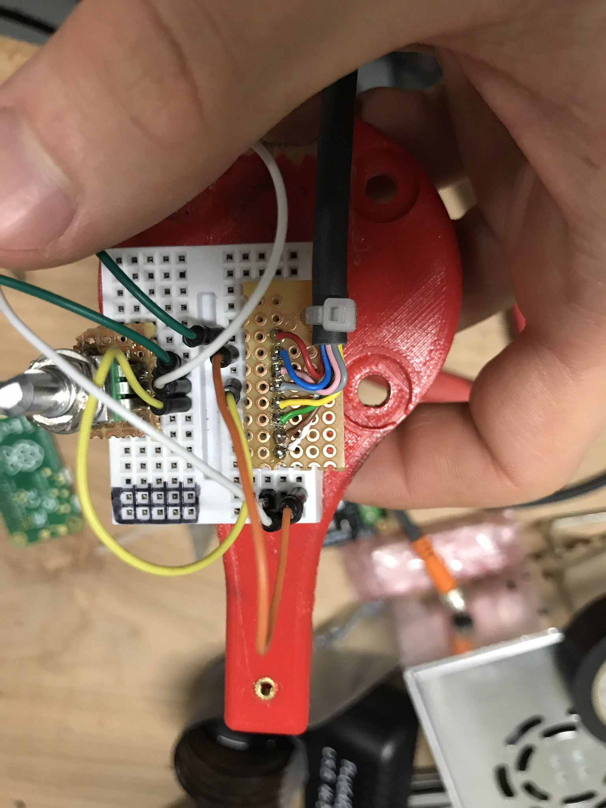

I thought it would be interesting to do light painting above paintings using a robot arm. I made a simple LED on a stick tool for the robot and then wrote some code to generate a program for the robot from an animation in Blender.

I couldn't turn off the lights where I was working so I made this dark space under a table.